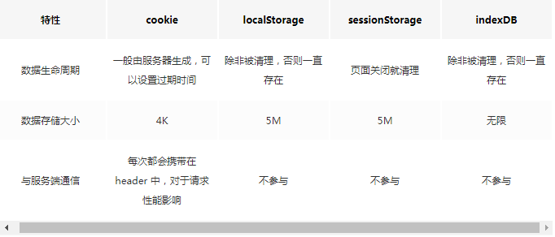
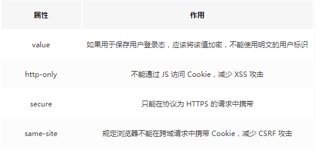

知识点
跨域解决方案
JSONP，通过Script标签，只支持get请求
CORS，关键是后端，前端设置Access-Control-Allow-Origin就可以开启，分简单请求与复杂请求
- 简单请求：GET/POST/HEAD；Content-Type：text/plain，multipart/form-data，application/x-www-form-urlencoded
- 复杂请求：发送option请求询问服务端是否支持跨域请求，会检查Authorization字段，没有就报错
document.domain，只支持二级域名相同的情况
postMessage，通过页面嵌入的方式
Service Worker
传输协议必须为HTTPS
实现缓存需三步
- 先注册Service Worker
- 然后监听install事件以后缓存需要的文件
- 通过拦截用户请求的方式检查是否存在缓存，存在缓存直接读取缓存文件，否则就去请求数据
可以在Application中查看
事件
事件触发三阶段
- window往事件触发处传播，遇到注册的捕获事件会触发
- 传播到事件触发处时触发注册的事件
- 从事件触发处往window冒泡，遇到注册的冒泡事件会触发
addEventListener参数
参数1：事件名
参数2：回调事件
参数3：useCapture可以是boolean/object
- 对于boolean：不传默认false（冒泡事件）。true（捕获事件）；
- 对于object：capture：与useCapture一致；once：boolean，true表示只执行一次，调用之后就移除监听；passive：boolean，表示永远不会调用 preventDefault
自定义事件
var evt = new Event(“look”, {“bubbles”:true, “cancelable”:false});document.dispatchEvent(evt);
这里使用 Event 构造器来创造了一个新的事件，然后调用 dispatchEvent 来在特定元素上触发。
事件阻止
- stopPropagation：可以阻止事件冒泡和捕获事件
- stopImmediatePropagation：也可以阻止事件，还可以阻止该事件目标执行别的注册事件
渲染原理
内核
- Firefox：Gecko
- Chrome/Safari：WebKit
步骤
浏览器接收到 HTML 文件并转换为 DOM 树
- 字节数据 => 字符串 => Token => Node => DOM
将 CSS 文件转换为 CSSOM 树
- 字节数据 => 字符串 => Token => Node => CSSOM
生成渲染树
script
如果想要渲染的快，script标签放在body标签底部
也可以添加defer/async属性
- defer表示JS文件会并行下载，但是会放在HTML解析完成后顺序执行
- async用于没有任何依赖的JS，表示JS文件下载和解析不会阻塞渲染
重绘（Repaint）和回流（Reflow）
重绘是当节点需要更改外观而不会影响布局的，比如改变 color 就叫称为重绘
回流是布局或者几何属性需要改变就称为回流。
回流必定会重绘，重绘不一定会回流。
导致重绘或者回流的几个动作
- 改变 window 大小
- 改变字体
- 添加或删除样式
- 文字改变
- 定位或者浮动
- 盒模型
输入 URL 到页面渲染的整个流程
- DNS查询，通过域名查询到具体的IP
- TCP握手
- TLS握手
- 向服务器请求资源，如果是200就继续解析，如果400、500就报错，如果300就会重定向，重定向超过多次也会报错
- 游览器解析文件，如果是GZIP就先解压，然后按照编码格式解码文件
- 解码成功，开始渲染流程，构建DOM树有CSS就会构建CSSDOM树。如果有script标签，会判断是async或者defer，前者会并行下载并执行JS，后者会先下载文件，等待HTML解析完成后顺序执行
- 如果没有就会阻塞渲染流程直至执行JS完毕
- CSSDOM树和DOM树构建完成后开始生成Render树，确定页面布局、样式等
- 生成Render树过程中，游览器开始调用GPU绘制，合成图层，将内容显示到屏幕上
示例图
游览器存储

cookie需注意安全性

试题
事件的触发过程是怎么样的？知道什么是事件代理嘛？
问题1：参考事件触发三阶段
问题2：事件代理就是当子节点是动态生成的时候，如果子节点需要注册事件的话就应该注册到父节点上；this，currentTarget都指向父节点，target指向触发的节点
什么是跨域？为什么浏览器要使用同源策略？你有几种方式可以解决跨域问题？了解预检请求嘛？
问题1：因为游览器出于安全考虑，有同源策略。也就是协议、域名、端口有一个不同就是跨域。
问题2：防止CSRF攻击，CSRF利用用户的登录状态发起恶意请求。
问题3：参考跨域解决方案
为什么操作 DOM 慢
DOM属于渲染引擎中的东西，JS属于JS引擎中的东西。当用JS操作DOM的时候，涉及两个线程之间的通信，并且可能会带来重绘回流的情况，所以导致性能上的问题
插入几万个 DOM，如何实现页面不卡顿？
虚拟滚动（virtualized scroller），只渲染可视区域，当用户在滚动时，在实时去替换渲染的内容。
什么情况阻塞渲染？
1、首先渲染的前提是生成渲染树，所以 HTML 和 CSS 肯定会阻塞渲染
2、当浏览器在解析到 script 标签时，会暂停构建 DOM，完成后才会从暂停的地方重新开始。
导致重绘或者回流的几个动作？
改变 window 大小
改变字体
添加或删除样式
文字改变
定位或者浮动
盒模型
重绘与回流是否与EventLoop相关？
当 Eventloop 执行完 Microtasks 后，会判断 document 是否需要更新，因为浏览器是 60Hz 的刷新率，每 16.6ms 才会更新一次。
然后判断是否有 resize 或者 scroll 事件，有的话会去触发事件，所以 resize 和 scroll 事件也是至少 16ms 才会触发一次，并且自带节流功能。
判断是否触发了 media query
更新动画并且发送事件
判断是否有全屏操作事件
执行 requestAnimationFrame 回调
执行 IntersectionObserver 回调，该方法用于判断元素是否可见，可以用于懒加载上，但是兼容性不好
更新界面
以上就是一帧中可能会做的事情。如果在一帧中有空闲时间，就会去执行 requestIdleCallback 回调。
如何减少重绘与回流？
transform替代top
visibility替代display，前者重绘，后者会回流
不要把节点的属性值放到循环中当做循环变量
不要使用table布局
动画实现的速度选择，速度越快回流次数越多，可以选择使用requestAnimationFrame
CSS 选择符从右往左，避免节点层级过多
将频繁重绘或回流的节点设置为图层，图层能阻止该节点的渲染行为影响其他节点。
will-change
video、iframe 标签
在不考虑缓存和优化网络协议的前提下，考虑可以通过哪些方式来最快的渲染页面，也就是常说的关键渲染路径，这部分也是性能优化中的一块内容。
DOMContentLoaded 事件后，就会生成渲染树，生成渲染树就可以进行渲染了，这一过程更大程度上和硬件有关系了。
提升加速几个点：
- 从文件大小考虑
- 从 script 标签使用上来考虑
- 从 CSS、HTML 的代码书写上来考虑
- 从需要下载的内容是否需要在首屏使用上来考虑